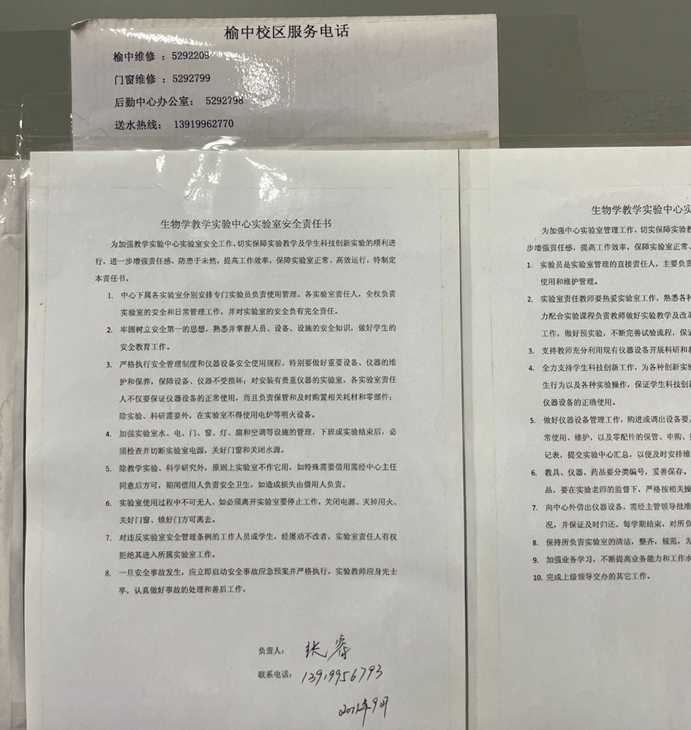
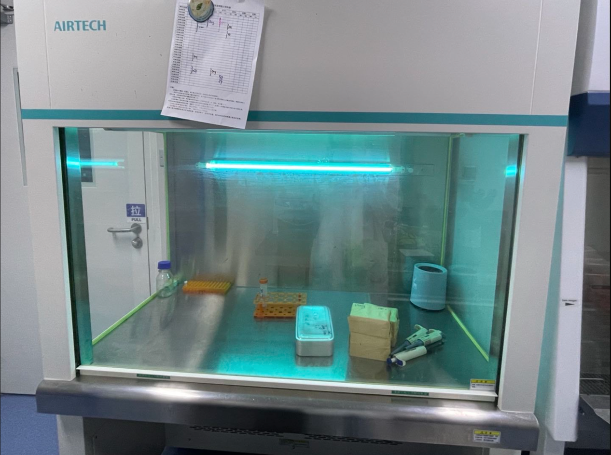
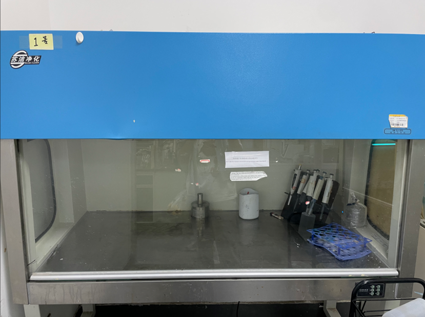
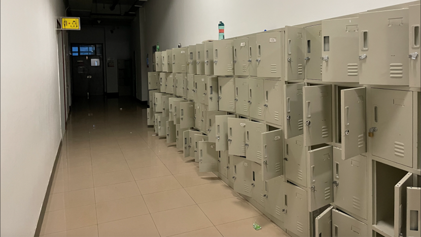

PART
Microorganisms
In our project, only nonpathogenic strains (E. coli Nissle 1917 and E. coli DH5-alpha) were used as chassis microorganisms. In addition, to prevent the exposure and release of our engineered strains in the environment or their transfer by human carriage, we strictly follow the BSL1 safety guidelines during our experiments, and the specific safety measures we took can be found in our safety form.
Circuit and Parts
Most of the parts we chose to use this year were previously described by previous iGEM teams and have been shown to be harmless to humans, animals or plants. It is important to note that there are three potentially harmful parts: HlyE, CCL21 and CDD-iRGD in our submitted sequences, which were used for tumor cell killing as toxic proteins, and we have already registered them in the check-in form. To prevent the leakage of them, we designed the lactate operon, pH operon or hypoxia operon in the gene circuit to restrict them. At the same time, the inclusion of gene amplification switches ensures the robustness of these operons in the in vivo environment, allowing their precise targeting to the tumor. This gene circuit is designed such that HlyE, CCL21 and CDD-iRGD can only be expressed in the tumor environment without leakage.
Furthermore, we expect to add an additional capsule coat to the exterior of the manufactured probiotic so that the drug does not start acting until after it enters the intestine, in order to again ensure the safety of the drug and prevent it from leaking before getting to the tumor.
Environmental safety
Considering that the engineered strains we constructed are resistant to kanamycin, ampicillin and chloramphenicol, if these microorganisms manage to leak into the environment, the spread of the resistance gene will cause genetic contamination. To avoid this, all people or objects that may come into contact with the engineered microorganisms will be disinfected with 75% alcohol or autoclaved before leaving the laboratory, which greatly prevents the escape of the microorganisms.
In addition, even if these engineered strains are eventually used in clinical treatments, we have designed enough genetic parts to avoid its contamination of the environment. We added HlpA to make our E. coli adhere to tumor cells instead of spreading randomly in the human body. An arabinose induced killing switch was also introduced, which means that our engineered strains would die if arabinose was not present in the environment. It can only be allowed to exercise its function if it is induced by arabinose in the intestinal environment. All things considered, the engineered E. coli we used will not spread in the environment.
Integrated Human Practice
In order to identify prevalent social issues and to gain a broader understanding of public perceptions of colorectal cancer, we distributed questionnaires to the public and CRC patients, during which conversations, information collection and analysis were involved. In order to fulfill iGEMer's commitment to responsible ethical behavior, we followed the National Health Council, Ethical Approval Protocol for Biomedical Research Involving Humans, during the course of our activities.
To this end, an informed consent form was prepared and presented at each questionnaire. We only administered the survey if the subject gave informed consent. Once the survey is completed, we ensure that the results are completely confidential and that all information is not disclosed to anyone outside of the research members of this project. All documents will be kept exclusively by team members and only team members will ha
Our interview with the patient was launched at the First Hospital of Lanzhou University. We contacted Jiang Lei, the deputy chief physician of the Department of Oncology, who reported our case to the hospital's ethics committee, and we launched our activities only after the hospital's ethics committee agreed. Also, before meeting the patients we told them the purpose of our investigation and assured them that we would protect their personal privacy. If they felt uncomfortable during the process, they could leave at any time. Above all our behaviors strictly followed the \<Ethics Approval Protocol of Biomedical Research Involving Human Subjects> and \<Human Genetic Resources Management Regulations of PRC>.ve access to them.
Lab
Experimental safety training and safety assurance
As members of the biology community, we are well aware of the importance of experimental safety. Before we start the experiment, each of us was trained in laboratory skills, including but not limited to how to inoculate bacteria, how to use sterilization devices and how to do personal protection. So during our project, it greatly reduces risks of microbes' harm to human body. In the last day of our training, our supervisor will examine us, and those who fail will continue to study until they pass before being allowed to enter the lab. At the same time, our laboratory has posted the laboratory safety rules, and a person is responsible for the safety of our laboratory. His telephone number is posted on the wall of the laboratory, so that we can get in touch with him at any time. In addition to supervisors, our team also has counselors and instructors who advise us on safety issues throughout our experiments, and who are able to spot potential risks that we are not aware of. If we find some risks in the project, we will first seek help from the tutor and consultant. If we do not solve the problem well, we will seek help from the Experimental Safety Management Center of Lanzhou University, which can provide us with more effective solutions. 
Experimental Safety
The laboratory we use is a level 1 standard microbiology laboratory, which is equipped with 3 biosafety cabinets, multiple chemical fume hoods and sterilizing pots. For the hazardous chemical, all of them are stored in separate locked cabinets。When we handle toxic chemicals, we do so in a fume hood, wearing mask, gloves and safety goggles correctly. It is worth mentioning that these are all disposable and will be disposed them exclusively immediately after we are done using them. Not only that, but our lab is also specifically divided into EB contaminated areas, and all people entering the area will strictly wear masks and gloves. Outside our lab, there are many cabinets for us to keep our belongings, bags and clothes. Anything unrelated to the experiment is forbidden to be brought into the laboratory to prevent contamination.
For usual personal protection, our laboratory provides sufficient disposable medical gloves and masks for each person to prevent inhalation of microorganisms. For the whole laboratory building access, People who want to enter the building must use their activated campus card, otherwise the door cannot be opened. Only those who have submitted and approved an application to the Lab Safety Center can have their campus card activated. For our laboratory access, we have updated the fingerprint and coded locks on the lab doors (can see it in picture we uploaded in the safety form) since we took over the lab. Only our team members can enter our laboratory.
  
Emergency treatment
Our laboratory is equipped with eye shower, emergency shower and medical first aid kit for emergencies. At the same time, there is a fire alarm button outside our laboratory, which can warn the whole laboratory members to escape safely in case of a fire.
Waste treatment
When we leave the lab, we need to disinfect our hands and all waste need to be sterilized. The office area and the experimental area are strictly separated. We are not allowed to touch the door handle with gloves. The laboratory has a standard air purification system for air filtration; We also carry out high-pressure sterilization for experimental wastes according to the standard. All these measurements can prevent GMOs unintentionally released into the environment.
Education
In order to promote synthetic biology and iGEM more widely, we conducted a questionnaire among minors. Before conducting the questionnaire, we obtained the consent from them and their guardians, and they were accompanied by their guardians in the whole process of participating in the activities, and their appearance was also approved by their guardians. The data information we obtain will not be disclosed to the public, only for data analysis. Permission was also obtained from their guardians before we uploaded their photos to our wiki page.
To make the field of synthetic biology more inclusive, we organized an event with SCUT-China for handicapped people in Guangzhou city. The event was held with the consent of their guardians, and their photos were posted on our website, as well as their own and their guardians' consent. Again, we were approved by the Guangzhou Disabled Persons' Federation before the event started. Above all our behaviors strictly followed the \<Ethics Approval Protocol of Biomedical Research Involving Human Subjects> and \<Human Genetic Resources Management Regulations of PRC>.